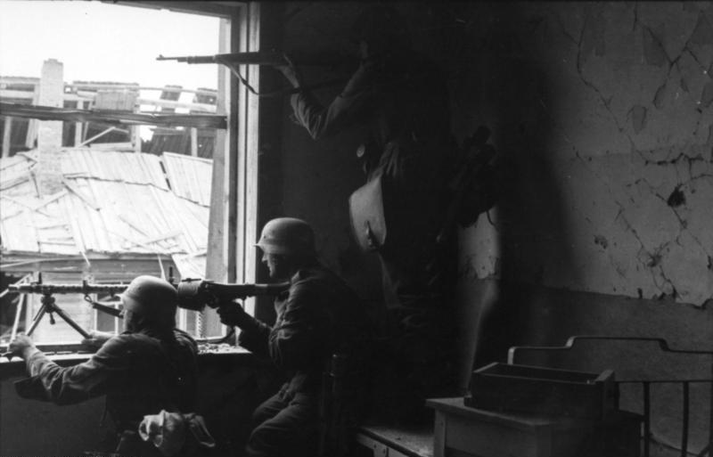

Pauls Geschichte · Vor Leningrad · Februar 1943
„Durchhalten!“
Seit über einem Jahr liegt Paul vor Leningrad. Dann kommt die Nachricht: Die 6. Armee hat in Stalingrad aufgegeben. Rund 110 000 deutsche Soldaten sind in Gefangenschaft. Kaum einer glaubt noch an den Sieg.
Zwei Wochen später hören die Soldaten im Radio eine Rede aus dem Berliner Sportpalast. Propagandaminister Goebbels schreit, die Menge jubelt. Pauls Kamerad schaltet ab: „Die sitzen in Berlin. Wir sitzen hier im Schnee.“
Paul ist erfunden. Die Rede gab es wirklich, am 18. Februar 1943 (Buch S. 106).
